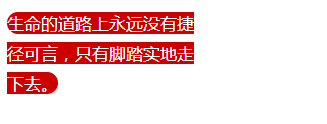
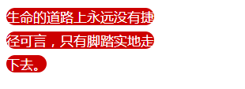
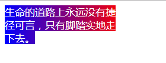
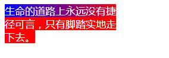

box-decoration-break属性可以指定元素片段在跨行、跨列或跨页（如打印）时候的样式渲染表现。
默认情况下，元素的跨行或跨列渲染都是裁剪分割，各得一部分。举个例子
<div class="box"> <span class="text">生命的道路上永远没有捷径可言，只有脚踏实地走下去。</span> </div>
.box { width: 200px; color: #fff; }
.text { border-radius: 30px; line-height: 30px; }
结果如下:

可以看到换行的位置是直直切割，圆角在最开始和最后面。显然每一行都是圆角才更好看。就要借助 box-decoration-break属性。
CSS改动如下：
.box { width: 200px; color: #fff; }
.text { border-radius: 30px;
line-height: 30px; -webkit-box-decoration-break: clone; box-decoration-break: clone; }
结果如下：

可以看到断开的两端都是圆角：
在CSS布局中，总会存在元素box盒子断开的情况（page/column/region/line），box-decoration-break可以决定断开时候的渲染表现。
当然，只能影响一下部分CSS的渲染，
background
border
border-image
box-shadow
border-radius
clip-path
margin
padding等
box-decoration-break语法如下：
box-decoration-break: slice; /* 默认值 */
box-decoration-break: clone;断开的各个盒子样式独自渲染。
借助box-decoration-break属性，我们可以实现整体渐变效果。
.text { background-image: linear-gradient(to right, blue, red 200px);
-webkit-box-decoration-break: clone; box-decoration-break: clone; }
结果如下：

而默认状态所有行累加为一个渐变；

在移动端页面，包括小程序中可以放心使用。Android，Chrome等浏览器下还需要-webkit-私有前缀，Firefox浏览器完全支持。